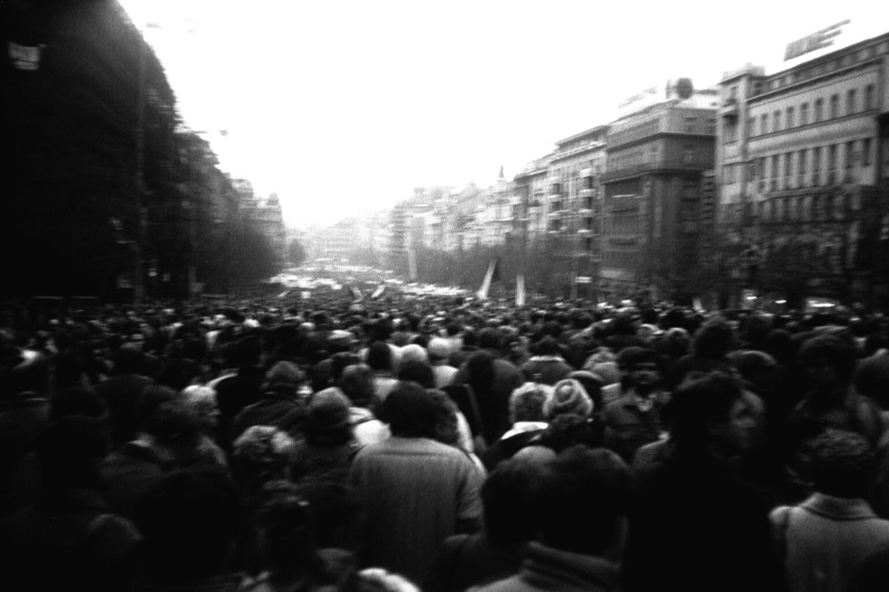
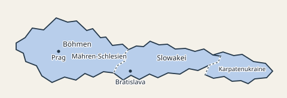
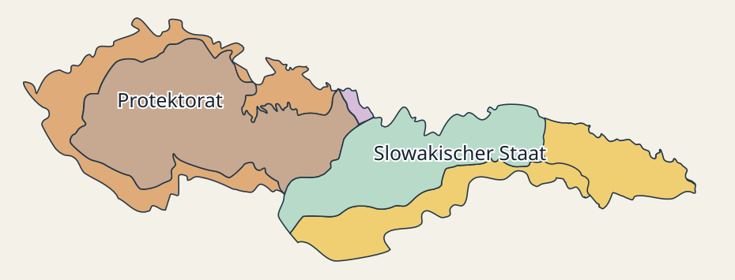
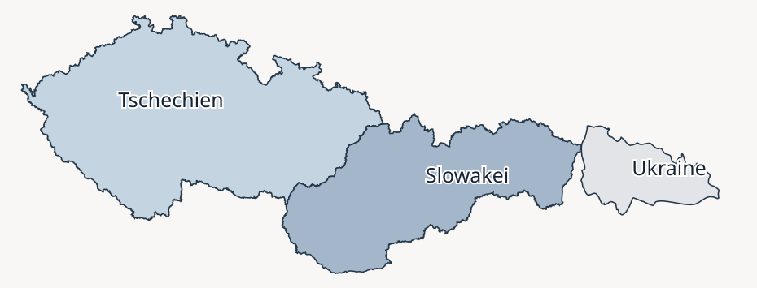

Warum sieht man 1968 in Prag einen Panzer und 1989 auf dem Wenzelsplatz eine Menschenmenge? Beide Bilder entstanden in derselben Stadt. Dieser Kurs erklärt, wie sich die politische Ordnung dazwischen und danach veränderte.
1900 · Das Nationaltheater an der Moldau. Prag gehört um 1900 zu Österreich-Ungarn. Das Nationaltheater gibt der tschechischen Sprache eine öffentliche Bühne. Bildquelle1968 · Menschen mit einer Flagge neben einem brennenden Panzer. Truppen unter sowjetischer Führung beenden den Reformkurs des Prager Frühlings. CIA-Sammlung

1989 · Demonstrierende auf dem Wenzelsplatz. Die Proteste der Samtenen Revolution tragen zum Ende der kommunistischen Herrschaft bei. ŠJů · CC BY-SA 3.0
Prag liegt an der Moldau und war das Zentrum Böhmens. Böhmen, Mähren und ein Teil Schlesiens gehören heute zu Tschechien. Nach dem Ersten Weltkrieg entstand 1918 die Tschechoslowakei, ein gemeinsamer Staat von Tschechen und Slowaken, in dem auch viele andere Bevölkerungsgruppen lebten. Seit 1993 sind Tschechien und die Slowakei eigenständige Staaten.
Beginne mit der Staatsgründung von 1918. Lies den Kapiteltext, untersuche ein Bild, einen Film oder eine Tonaufnahme und vergleiche deine Beobachtungen mit der Musterlösung. Zur Vorgeschichte vor 1918
Regionen und Grenzen im Vergleich
Suche zuerst Prag in Böhmen und Brünn in Mähren. Schlesien liegt nordöstlich von Mähren und reicht über die heutige tschechisch-polnische Grenze. Die Slowakei liegt östlich der böhmischen Länder. Die drei Vergleichskarten verwenden denselben Ausschnitt und eine gemeinsame Legende. Die Grenzlinien basieren auf ausgerichteten historischen Vektorkarten und heutigen Grenzdaten.
Ab 1918 · Erste Republik

Grenzen nach den Friedensverträgen, Gliederung ab 1928.
1938/39 · Auflösung

Abtretungen 1938 und politische Neuordnung im März 1939.
1993 · Zwei Staaten

Die innere Grenze der Föderation wurde am 1. Januar 1993 zur Staatsgrenze. Die Karte nutzt heutige Grenzdaten einschliesslich kleiner Korrekturen von 1997.
Die Karte zeigt die historischen Landschaften innerhalb des heutigen Tschechiens. Mit «Schlesien» ist hier der tschechische Teil gemeint. Pavel Fric und weitere Urheber · CC BY-SA 4.0
Böhmen, Mähren und Österreichisch-Schlesien gehörten zur österreichischen Reichshälfte. Das Gebiet der heutigen Slowakei lag in der ungarischen Reichshälfte. IMeowbot · gemeinfrei
Aus Teilen beider Reichshälften entstand die Tschechoslowakei. Die Karte zeigt ihre Landesgliederung von 1928 bis 1938. Mähren und der tschechoslowakische Teil Schlesiens bildeten ab 1928 eine gemeinsame Verwaltungseinheit. Ganz im Osten lag die Karpatenukraine. Kolomaznik · CC BY 4.0
1938 erhielt das Deutsche Reich Grenzgebiete (1), Ungarn südliche Gebiete (2) und Polen das Olsagebiet (4). Die Karpatenukraine (3) wurde zunächst autonom und im März 1939 von Ungarn besetzt. Im März 1939 entstand unter deutscher Herrschaft das Protektorat (5). Die Slowakei (6) erklärte unter deutschem Druck ihre Selbstständigkeit. LucaLuca und Piotrus · gemeinfrei · Weitere Karten des US Holocaust Memorial Museum
1945 wurde die Tschechoslowakei wiederhergestellt. Die Karpatenukraine ging an die Sowjetunion und gehört heute zur Ukraine. Am 1. Januar 1993 wurde aus der Grenze zwischen den beiden Teilrepubliken die Staatsgrenze zwischen Tschechien (grün) und der Slowakei (orange). Die Karte zeigt die heutige Lage beider Staaten in Europa. EmilJ · CC BY-SA 3.0
Vergleiche die Slowakei auf den Karten zur Monarchie, zur Ersten Republik und zu 1993. Zu welchem Staat gehörte das Gebiet jeweils?
Musterlösung anzeigen
Vor 1918 gehörte das Gebiet zum Königreich Ungarn innerhalb Österreich-Ungarns. Ab 1918 war es Teil der Tschechoslowakei. Seit 1993 ist die Slowakei ein eigener Staat.
Grenzen auf drei Karten vergleichen
Nutze die Karten zur Ersten Republik, zu 1938/39 und zu 1993. Die Karte zur Ersten Republik zeigt die Verwaltungsgliederung von 1928 bis 1938. Nutze die gemeinsame Farblegende und bei Bedarf die nummerierte Detailkarte zu 1938/39.
Vom Staatsgebiet zur Staatsgrenze. Verfolge Böhmen und die Slowakei auf allen drei Karten. Wie verändert sich ihre staatliche Zugehörigkeit? Erkläre, was 1993 mit der Grenze zwischen den tschechischen und slowakischen Landesteilen geschah.
Musterlösung zu Aufgabe 1 anzeigen
In der Ersten Republik gehörten Böhmen und die Slowakei zum selben Staat. 1938 verlor dieser Staat Grenzgebiete. Im März 1939 wurde das verbliebene Böhmen Teil des deutsch beherrschten Protektorats, während ein eigener, von Deutschland abhängiger slowakischer Staat entstand. Nach der Wiederherstellung der Tschechoslowakei 1945 bildeten beide Gebiete erneut Teile eines Staates. 1993 wurde die innere Grenze zwischen den beiden Teilrepubliken zur Staatsgrenze. Böhmen gehört seither zu Tschechien, die Slowakei bildet den östlichen Nachbarstaat.
Den Osten verfolgen. Suche die Karpatenukraine auf der Karte der Ersten Republik. Welche Veränderung zeigt die Karte für 1938/39? Mit welcher Beobachtung auf der Karte von 1993 kannst du zeigen, dass dieses Gebiet bei der Teilung nicht mehr zur Tschechoslowakei gehörte?
Musterlösung zu Aufgabe 2 anzeigen
Die Karpatenukraine lag am östlichen Ende der Ersten Republik. 1938 gingen südliche Teile an Ungarn, der Rest wurde zunächst autonom und im März 1939 von Ungarn besetzt. Auf der Vergleichskarte von 1993 endet die grün markierte Slowakei an der Grenze zur Ukraine. Die Karpatenukraine liegt jenseits dieser Grenze. Der entscheidende Schritt zwischen den Karten war die Abtretung an die Sowjetunion 1945.
Zwei Grenzänderungen erklären. Wähle ein Gebiet, das die Tschechoslowakei 1938 verlor. Beschreibe seine Lage in der Ersten Republik und den Wechsel 1938. Vergleiche diesen Grenzwechsel mit dem von 1993. Wer entschied jeweils und welche Grenze änderte sich?
Musterlösung zu Aufgabe 3 anzeigen
Ein Beispiel sind die westlichen und nördlichen Grenzgebiete Böhmens. Sie lagen in der Ersten Republik innerhalb der tschechoslowakischen Aussengrenze. Das Deutsche Reich annektierte sie 1938 nach dem Münchner Abkommen, das Deutschland, Italien, Grossbritannien und Frankreich ohne Beteiligung der tschechoslowakischen Regierung an den eigentlichen Verhandlungen aushandelten. Die politischen Führungen der beiden Teilrepubliken vereinbarten 1992 die Auflösung der Föderation zum Jahreswechsel. Aus ihrer bisherigen inneren Grenze wurde eine internationale Grenze.


_colored.svg){kind=link}

.png){kind=link}